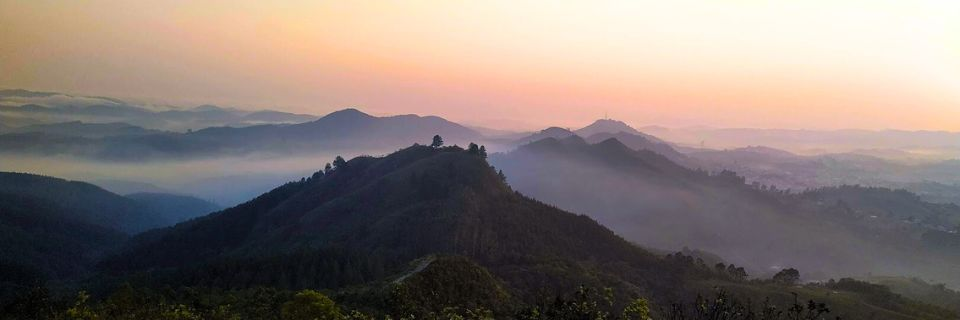
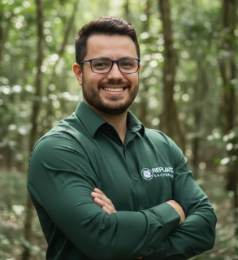
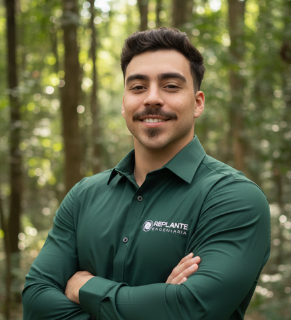

A Replante

"Tiramos o seu projeto ambiental do papel. Mão de obra especializada, maquinário próprio e rigor técnico para consultorias e proprietários rurais."
Nossa História
A Replante Engenharia traz a solidez de quem está no campo há anos. Nossa trajetória reflete o foco contínuo na excelência operacional:
Início focado na execução de campo e plantio manual.
Expansão de maquinário e escala em silvicultura.
Engenharia consolidada: Gestão + Operação Técnica.

RAPHAEL FURLAN
SÓCIO-DIRETOR DE PLANEJAMENTO | ENGENHEIRO FLORESTALEngenheiro Florestal (UFPR, 2017) e fundador da empresa. Iniciou sua trajetória com a 'mão na massa', executando pessoalmente o plantio e a manutenção, o que lhe deu a visão crítica de quem conhece o solo.
Traz para a Replante o equilíbrio exato entre essa experiência de campo e a visão de Planejamento e Custos adquirida no setor corporativo (AMATA S.A.). Essa combinação permite transformar projetos complexos em operações eficientes, sem descolar o planejamento da realidade da execução.

GUILHERME PORTES
SÓCIO-DIRETOR DE OPERAÇÕES | ACAD. EM ENG. AGRONÔMICAGraduando em Engenharia Agronômica pela UFPR, Guilherme possui raízes no campo, dominando a rotina rural e o manejo operacional desde cedo. Nos últimos 2 anos, esteve à frente da gestão da empresa, onde liderou contratos e operações florestais com total autonomia.
Traz para a Replante a força de uma liderança que vive o canteiro de obras. Essa vivência permite antecipar gargalos e gerenciar a execução com visão de dono, garantindo que o cronograma seja cumprido com o máximo de eficiência operacional.
Nosso legado é a floresta em pé.